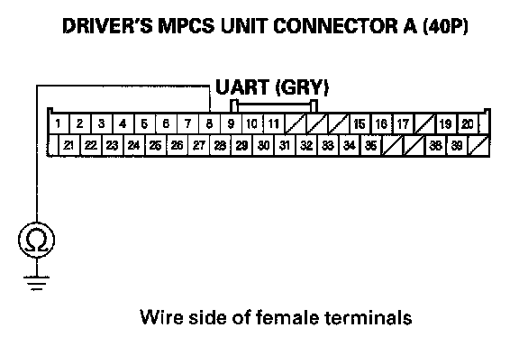
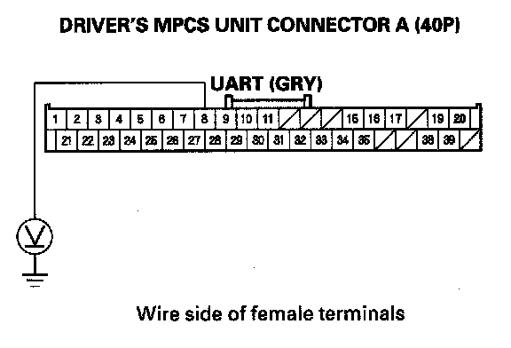

B2187
DTC B2187: Communication Line (UART Line) Driver's MPCS Unit cannot send UART messages.NOTE: If you are troubleshooting multiple DTCs, be sure to follow the instructions in B-CAN System Diagnosis Test Mode A.
1. Clear the DTCs with the HDS.
2. Turn the ignition switch OFF, and then back ON (II).
3. Check for DTCs with the HDS.
Is DTC B2187 indicated?
YES - Go to step 4.
NO - Intermittent failure, the system is OK at this time.
4. Turn the ignition switch OFF.
5. Disconnect the passenger's MPCS unit connector A (28P).
6. Turn the ignition switch ON (II).
7. Clear the DTCs with the HDS.
8. Turn the ignition switch OFF, and then back ON (II).
9. Check for DTCs with the HDS.
Is DTC B2187 indicated?
YES - Go to step 10.
NO - Do the passenger's MPCS unit input test, step No. 6. If OK, replace the passenger's MPCS unit.
10. Turn the ignition switch OFF.
11. Disconnect the moonroof control unit/motor 10P connector.
12. Turn the ignition switch ON (II).
13. Clear the DTCs with the HDS.
14. Turn the ignition switch OFF, and then back ON (II).
15. Check for DTCs with the HDS.
Is DTC B2187 indicated?
YES - Go to step 16.
NO - Replace the moonroof control unit/motor.
16. Turn the ignition switch OFF.
17. Disconnect the driver's MPCS unit connector A (40P).

18. Check for continuity between the driver's MPCS unit connector A (40P) No. 8 terminal and body ground.
Is there continuity?
YES - Repair short to ground in the wire.
NO - Go to step 19.
19. Turn the ignition switch ON (II).

20. Measure the voltage between the driver's MPCS unit connector A (40P) No. 8 terminal and body ground.
Is there voltage?
YES - Repair short to power in the wire.
NO - Replace the driver's MPCS unit.